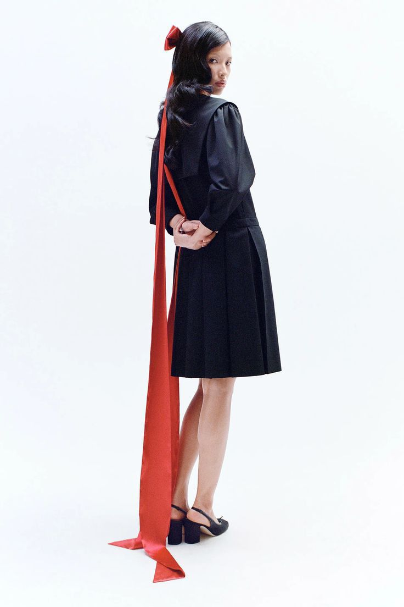

Diseñadora de moda con sede en Nueva York, conocida por su enfoque contemporáneo y lúdico en el diseño. Utiliza técnicas como el drapeado y la personalización textil, junto con detalles artesanales y un estilo inspirado en la moda de los años 90. Sus colecciones se caracterizan por un enfoque fresco y casual, combinando elementos de la cultura pop y la moda urbana con una estética sofisticada. Liang explora temas como la nostalgia y la identidad personal, dando lugar a piezas que son a la vez elegantes y accesibles.